Servo motor control with PID
Introduction of motor control
There are two classes of motors: regular servo motors and continues rotation motors. The mainly different between the two classes is the range of changing. The regular servo motor can can change from 0 to 180 degree, while the continuous rotation motor can change from 0 to 360 degree. Because of the difference, the control algorithms are different within these motors.
• Regular servo motorPID control
The control algorithm of regular servo motor is designed as variable frequency control, as the figure 1 shown below. 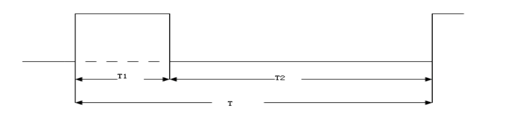
figure 1: PWM control of regular servo motor
T1 is the duration of high voltage, which determines the angle of the motor; T2 is the duration of low voltage, which is fixed as 20ms. The relationship between with the angle is:
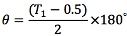
• Continuous rotation motor
The control algorithm of continues rotation motor is designed as fixed frequency control, as the figure 2 shown below. 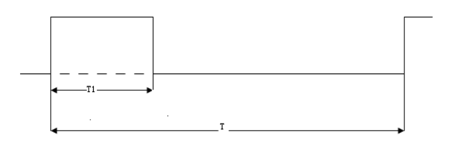
figure 2: PWM control of continues rotation motor
T1 is the duration of high voltage, which determines the speed and orientation of the motor; T is the duration the whole loop, which is fixed as 20 ms. When , the orientation of the motor is clockwise and the closer to 1.3ms is , the faster the motor is; When , the orientation of the motor is counterclockwise and the closer to 1.7ms is , the faster the motor is; When , the motor will stop.
PID control is a useful algorithm to control a servo system especially a motor system, for its significant parameters: Proportional, Integral and Derivative. The principle of the algorithm is shown below. 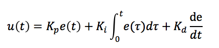
where Kp is to calculate the current error, Ki is to consider all the errors before and Kd is to predict the trend according to the last two errors. By adjusting these three parameters, we can make a fast, accurate and less overshooting servo system.
Motor control with saturation and dead zone
As we introduced above, the range of regular servo motor is from 0 to 180. Therefore, we need to avoid the set the duty of PWM out of the range of the motor. In order to protect the motor, we used a saturation function to limit the range of duty we set and source code is shown below.
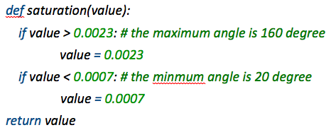
Moreover, in order to prevent jittering, we set a dead zone to avoid the motor moving in a small range. The source code is shown below.
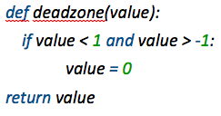
MPU-6050 decoding
The provided interfaces of the MPU6050 module are I2C and SPI and in our project, we use the I2C port. The hardware connection is shown in figure 3 below.
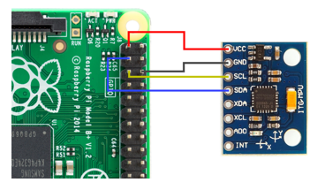
Figure 3 Connection of MPU-6050 with Raspberry Pi
MPU-6050 has a 3-axis accelerator, which can provide us the acceleration of the 3-axis: x, y, and z. We can use the data to compute the angle of roll and pitch and the equations are shown below.
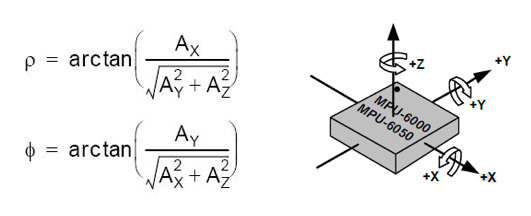
However, to calculate Euclidian angle yaw, we need a compass to provide additional data to compute yaw. Therefore, in our project, we ignore the rotation along z axis.
Graphic Simulation with OpenGL and Pygame
In order to make the performance of MPU-6050 visible, we used OpenGL and Pygame to draw a block that can show the changes of the Euclidian angles: roll, pitch and yaw. In this part, we use the data from the MPU-6050 and rotation the block we drew with the function in OpenGL: glRotate(). Because we couldn't compute the angle of yaw, hence, we comment our the z-axis code, like the source code shown below.
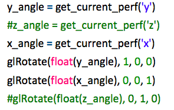
The result of simulation is shown in the figures below.
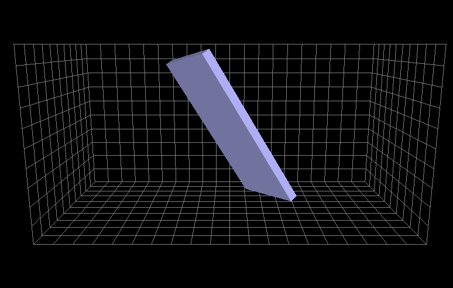 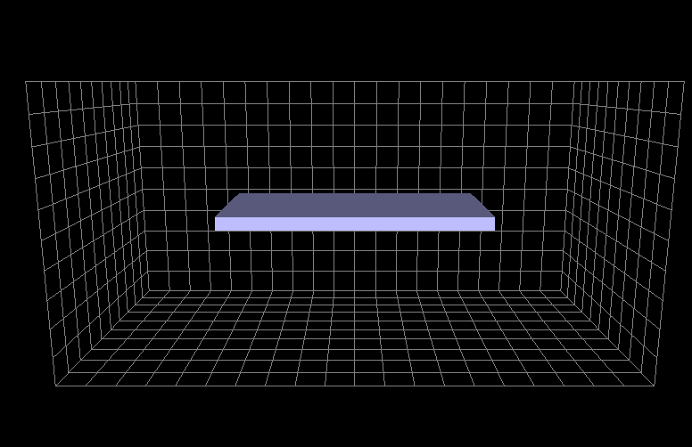
Figure 4,5 Simulation results